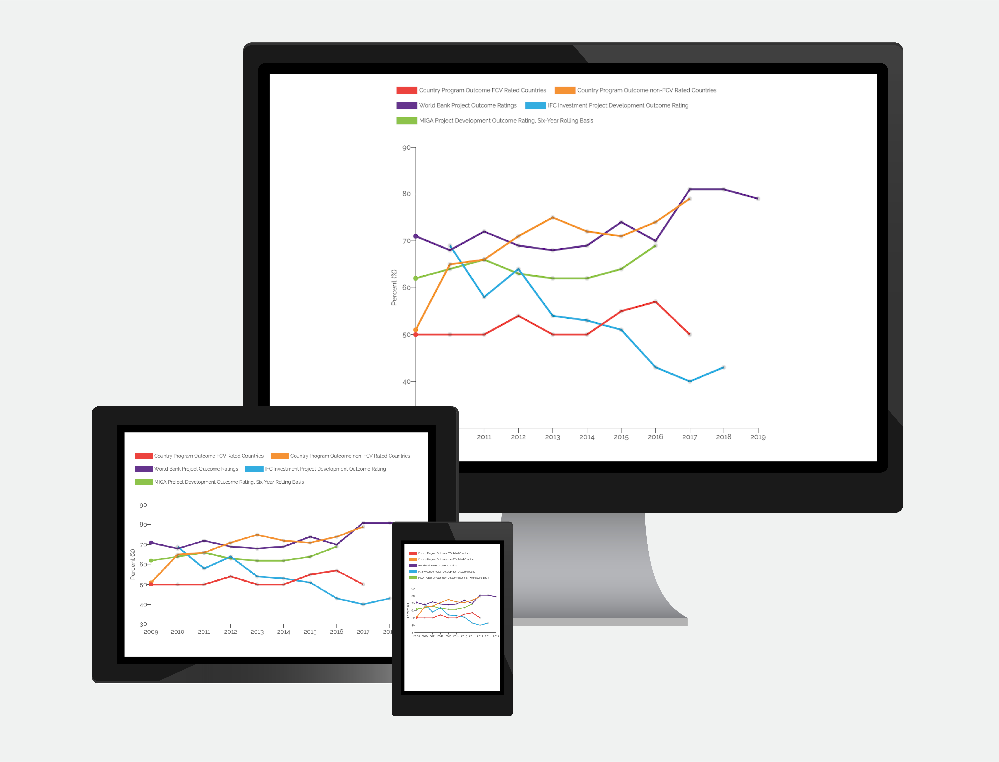
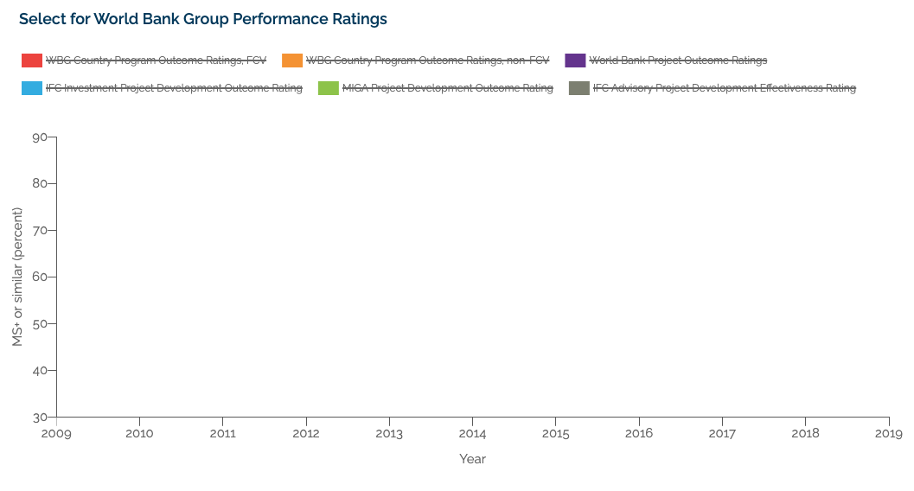

The Independent Evaluation department for World Bank Group
End-to-end UX/UI Design, Web Development.
An interactive graph for The World Bank Results and Performance of 2020 annual report that’s viewable on their downloadable ereader mobile app.
The World Bank had recently begun incorporating interactivity into their online reports. This report was an opportunity to showcase the Director General Office’s partaking in the adoption and integration of technological advancements and improvements within the company.
This report was already available on The World Bank's online Reader and in print pdf and was chosen because of its significance in departing from tradition. Instead of just assessing performance through ratings, it included both World Bank and International Finance Corporation (IFC) projects.
Even though The World Bank approached me to create four static graphs for the online report, they were not thrilled at the prospect of multiple graphs taking up a lot of screen space, especially on mobile. However, they were not sure of an alternative.
The four static graphs are outcome ratings of The World Bank that are measured in percent over units of years. They have a standard format with a title, caption, and x/y axis labels.
Four original graphs from the print report


As I listened to their ideas and potential pain points, I brainstormed how to create a better user experience and value proposition.
By using interaction design principles, I could create a graph that allowed the user to compare the data while simultaneously minimizing screen space.
My objective turned into creating a UI that:
Before combining the graphs, I re-evaluated every part of the graphs deciding between necessary and redundant elements and how to display and associate information. My design plan was as follows:
The World Bank's branding and style document dictated the visual design. Fortuitously, there are precisely five secondary colors–the graph has five lines!
The World Bank Group's data vizualization style guide and color palette


I styled the Country Program Outcome graphs of FCV and non-FCV rated countries with red and orange, analogous colors, as they had to be displayed simultaneously.
Using analogous colors for association

Looking to associate the graph line and legend label with the caption, I added the data color to a left border alongside the caption to not break the reading line while the eye traveled downwards.
Left-border next to the caption guiding the eye down the page

I developed the graph using Chart.js API. Once I rapidly set up a low-fidelity prototype, I made the caption text appear when selecting the corresponding legend item.
Making the text the color the same color as the associated graph line decreased my QA time, as it became effortless to check if the right caption appeared with the correctly corresponding graph line.
Captions colored to match the graph line, decreasing QA time

To validate the concept I shared the low-fidelity prototype with the internal stakeholders.
Upon seeing the interactivity at play, they realized the x-axis label felt redundant on the graphs with standard years but necessary on the fiscal year graph. They also worried that the trend differences were not apparent enough.
I solved these problems by:
To facilitate UX, user instructions would be included in the graph title.
During the styling process, the location of the legend bothered me. A legend is usually under or to the side of a graph. But since the legend labels were serving as the graph titles, I felt the top of the graph would be a better placement.
The change in legend position removed the visual break that previously occurred between the graph and the caption.
Legend moved to the tope of the graph

Upon presentation to the client, they were still concerned the trends were lost on a desktop's full screen as the graph stretched too much horizontally.
Instead of maintaining the aspect ratio, I solved this problem by creating different ratios when the screen size changed. I also applied a maximum width that prevented the graph from expanding past the point of usefulness for determining trends.
Aspect ratios
To increase accessibility to the caption, especially on mobile, I made it more prominent.
Caption bolded and increased in font size

As I tweaked and tested the styles, I felt the legend was hard to read due to the low line-height and center alignment. Left aligning and adding padding resolved the readability problem, making it easier to read the legend labels one at a time.
Since the main UX goals were to save screen space and get an overview of the chapter, the client decided that upon loading, there should be no direct comparison between the graph lines to remove bias. They suggested having the graph be blank on load.
To further guarantee no comparison or bias, I removed the ability to toggle from a single graph line to all graph lines.
I also guided the user into their first interaction with the graph with instructions to "Select for…".
Blank graph on load with additional dataset and updated title telling the user the "select"
The interactive graph placed at the head of the chapter gave the user an overview and comparison of the chapter data without having to scroll through multiple graphs, decreasing the likelihood of an inaccurate or biased comparison.
In addition to minimizing screen space, users were also able to interactively compare data for a more thorough understanding of the data and deeper insights.
Finished interactive graph